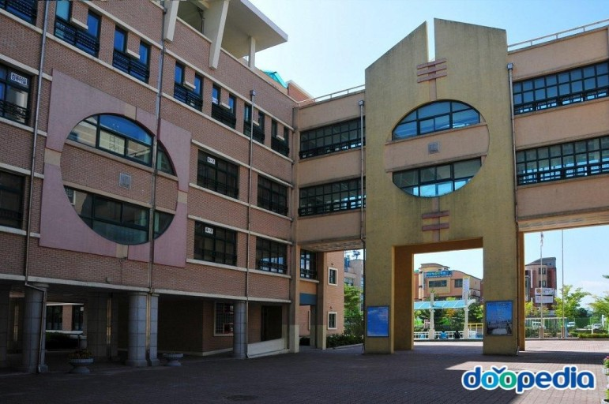

초등학교 : 지곡초등학교

지곡초등학교 .. 은근히 추억이 많다 ..
초등학교 1학년 시절엔 전부 다 기억은 안 나지만 특별히 기억 남는 건 책상에 앉아서 무슨 벌이 나오는 애니메이션을 봤던 기억이 있다.
초등학교 2학년이 되어서 나는 김재원이라는 친구를 만난다. 얘랑 종성이랑은 아직도 제일 친한 친구다.
초등학교 2학년 때 안 좋은 기억이 하나 있는데, 내 책상 서랍이 잘 정돈 되지 않았다고 그 당시 담임선생님이 내 책상을 엎어버렸다. 어릴 때에는 꽤 충격이었다 ...
초등학교 3학년은 사실 기억들이 많이 없는데, 이때까지 '놀토'라는게 있었던 거 같고 토요일 학교 오전수업이 끝나고 삼촌네 집에 가서 삼겹살을 가족들끼리 다 같이 구워 먹었던게 기억난다 ㅋㅡㅋ